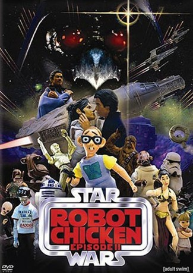

#10213 Robot Chicken: Star Wars - Episodes II
 
 IMDB-Wertung: 8.1 / 10
IMDB-Wertung: 8.1 / 10  Metascore: 0
Metascore: 0 
Es war einmal vor nicht allzu langer Zeit in einer nicht weit genug entfernten Galaxie...\r In einer Million Jahren, wenn Sokrates, Shakespeare und die Bibel lange vergessen sind, werden nur zwei große Werke in Erinnerung bleiben: Die epische Kino-Saga Star Wars und Adult Swims preisgekrönte State-of-the-art Stop-Motion-Animations-Satire Robot Chicken. Ein etwas ungewöhnliches Wiedersehen mit den Helden der Star Wars - Filme - ungeschnitten und unzensiert - so wie es eben wirklich war.
Jahr: 2008
Dauer: 21 Minuten
FSK: 12
Land: USA Studio: Adult SwimTonspuren: DD2.0 - ,
Untertitel:
Auflösung: 1080p (1440x1080) Größe: 600 MB
Genre: Sci-Fi, Komödie, Animation/Trick, Kurzfilm
Regisseur:  Seth Green
Seth Green
Drehbuch: Seth Green, Matthew Senreich, Douglas Goldstein, Tom Root, Hugh Davidson
Soundtrack: Les Claypool, Michael Suby
Darsteller:
Datei: X:\HD-Trick-Collections\Robot Chicken Star Wars - Episodes II (2008, FSK12, 1440x1080).mkv seit 23.12.2018
Festplatte: Kinder-Filme+Trick
 Alle Filme aus Gruppe 'HD-Trick-Collections'
Alle Filme aus Gruppe 'HD-Trick-Collections'